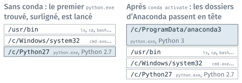
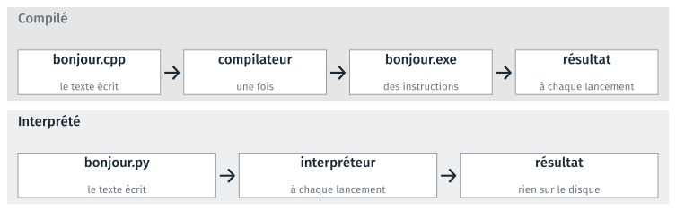

Premier programme#
Cette partie présente Python comme un programme en ligne de commande, que
le terminal lance comme ls ou cp. Elle explique comment le terminal
trouve le fichier d’une commande, ce qui distingue un langage compilé d’un
langage interprété, puis les deux façons d’employer l’interpréteur Python,
et le script de commandes, qui enchaîne des commandes enregistrées. Le TD
1c l’accompagne ; il est présenté en fin de page.
Python, un programme en ligne de commande#
python se lance dans un terminal, suivi du nom du fichier à exécuter. Il
n’ouvre pas de fenêtre, et écrit ses résultats dans le terminal. Tout
terminal où Python est disponible convient :
Dans Git Bash
$ cd ~/Desktop/info01/cours1/1c_programme
$ python altitudes.py
moyenne : 129.0 m
Dans l’invite de commandes d’Anaconda
(base) …>cd Desktop\info01\cours1\1c_programme
(base) …\1c_programme>python altitudes.py
moyenne : 129.0 m
L’invite de commandes d’Anaconda est cmd, avec conda déjà activé :
python y lance le Python d’Anaconda sans réglage. Dans Git Bash, il faut le
réglage du début du TD 1c. Si ce réglage échoue sur un poste, le Python de
la séance se fait dans l’invite de commandes d’Anaconda.
Comme ls ou cp, python est une commande, qu’un script peut lancer.
Un programme Python n’ouvre de fenêtre que s’il le demande, par une
bibliothèque graphique ; ceux du module écrivent dans le terminal ou dans
des fichiers.
Une commande désigne un fichier exécutable#
python est le nom d’un fichier, python.exe. bash le cherche dans une
liste de dossiers, la variable PATH, et lance le premier qu’il trouve.

La liste des dossiers de PATH, avant et après l’activation de conda.#
Un nom sans
/est cherché dans chaque dossier dePATH, dans l’ordre.Un nom qui contient un
/désigne un fichier précis, sans recherche :/c/ProgramData/anaconda3/python.exelance le Python d’Anaconda.type -a pythonaffiche les fichiers trouvés, dans l’ordre ; dans l’invite de commandes,where pythonjoue le même rôle.conda activatemet les dossiers d’Anaconda en tête dePATH. Le réglage du TD 1c le fait à chaque ouverture de Git Bash.
ls est aussi un fichier, /usr/bin/ls, fourni par Git for Windows.
Compiler ou interpréter#
Le processeur n’exécute que des instructions machine. Un programme écrit en texte y est traduit de l’une de deux façons.

Un programme compilé et un programme interprété, du texte au résultat.#
Dans un langage compilé, comme le C ou le C++, un compilateur traduit le texte une fois, après chaque modification, en un fichier exécutable qui contient des instructions machine.
Dans un langage interprété, comme Python, un interpréteur lit le texte et l’exécute à chaque lancement. Lancer un programme Python ne crée aucun fichier exécutable sur le disque.
L’interpréteur est lui-même un programme compilé : python.exe est écrit
en C.
Ce que chacun apporte#
Compilé : C, C++ |
Interprété : Python |
|
|---|---|---|
Après une modification |
recompiler, puis lancer |
relancer |
Essayer une ligne |
l’écrire dans un programme complet |
la taper dans une session interactive |
Ce qu’on donne à un autre |
l’exécutable, qui se lance seul |
le fichier |
Sur un autre système |
recompiler pour ce système |
le même fichier |
Un calcul en boucle |
la référence |
environ 50 fois plus lent |
Une faute de frappe |
signalée à la compilation |
signalée au lancement |
Le module emploie Python : il se relance sans étape de compilation, s’essaie ligne à ligne, et ses bibliothèques de calcul, comme numpy, font leurs calculs en code compilé, « at near-C speeds » selon la documentation de numpy.
Note
Vitesse d’une boucle de calcul : 72 fois le temps du C (Pereira et al., SLE 2017) ; 47 fois pour un produit de matrices (Leiserson et al., Science, 2020). Les deux mesures sont antérieures à Python 3.11, plus rapide de 25 % en moyenne. Certains langages, comme Java ou JavaScript, combinent les deux chemins.
Un fichier ou une session interactive#
L’interpréteur python exécute un fichier enregistré, ou les lignes
tapées une à une dans une session interactive.
Un programme, écrit dans un éditeur de texte
écrire
altitudes.pydans Notepad++, et l’enregistrer ;taper
python altitudes.pydans le terminal ;l’interpréteur lit le fichier enregistré, et l’exécute ;
le terminal affiche
moyenne : 129.0 m.
Une session interactive, dans le terminal
$ python
Python 3.12.14 (main, Sep 2 2026, 23:27:36) [GCC 15.3.0] on linux
>>> 128.4 + 131.0
259.4
>>> exit()
Le programme se relance à l’identique ; la session ne garde rien sur le disque. La ligne de version, relevée sous Linux, diffère sur les postes.
Avertissement
L’interpréteur lit le fichier enregistré sur le disque. Une modification faite dans l’éditeur mais pas enregistrée n’est pas exécutée : le TD 1c le fait constater.
Le programme s’écrit dans Notepad++, un éditeur de texte qui colore le
code d’après l’extension .py ; la couleur n’est pas dans le fichier.
L’éditeur de code du module, VS Code, se configure au cours 2.
Un script de commandes#
Un script est un fichier texte qui contient des commandes. bash les
exécute dans l’ordre, comme si on les tapait : le travail se refait en une
commande, aussi souvent qu’il le faut.
commandes.sh, dans Notepad++
# Commandes du TD 1b, puis le programme du TD 1c.
# Lancer depuis 1c_programme : bash commandes.sh
mkdir -p copies
cp ../1b_terminal/depart/*.html copies/
ls copies
python altitudes.py
Lancé dans Git Bash
$ bash commandes.sh
auld_lang_syne_brut.html raven_brut.html
auld_lang_syne_style.html raven_style.html
moyenne : 129.0 m
Une ligne qui commence par
#est un commentaire.pythony est une commande comme les autres.mkdir -pne signale pas d’erreur si le dossier existe déjà, au second lancement.L’équivalent pour l’invite de commandes est un fichier
.bat, en annexe du guide du TD 1c.
bash est donc un interpréteur, comme python : l’un lit des commandes,
l’autre du Python.
Automatiser une tâche
Trois outils, du plus simple au plus général :
un logiciel automatise les tâches qu’il prévoit, comme l’export du TD 1a ;
un script de commandes enchaîne et répète des programmes existants ;
un programme Python fait ce qu’aucun outil existant ne fait.
On choisit, pour une tâche, le plus simple des outils qui la font.
TD de la partie#
TD 1c — Écrire et lancer un programme, 20 minutes : voir quel
pythonla commande lance ; régler conda dans Git Bash, une fois par poste ; ouvriraltitudes.pydans Notepad++, le lancer, le modifier et le relancer ; lancercommandes.shsi le temps le permet ; Python en interactif.
Les TD des autres parties sont dans Travaux dirigés de la séance 1, version 2.